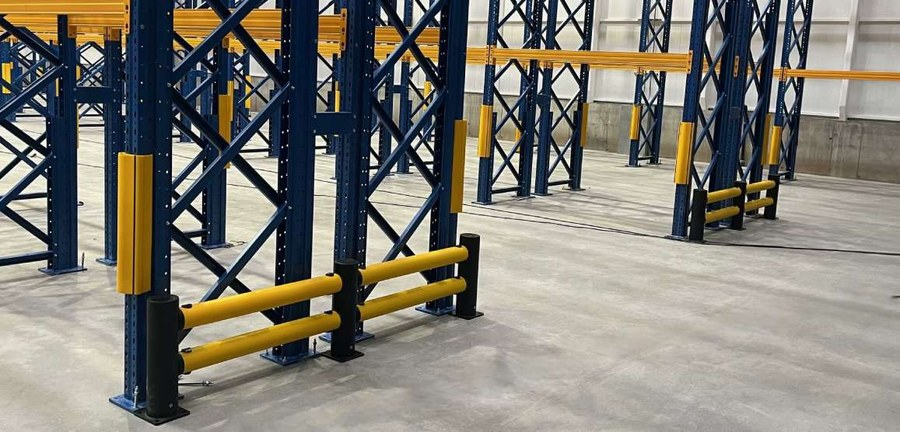

News from Thien Khoi. Short, dated, real.
Service launches, new documents, samples, projects.

Thien Khoi launches Safety Solutions for factories and warehouses in Northern Vietnam
Polymer barriers, rack and column guards, floor safety tape. On-site surveys across Northern Vietnam industrial parks, led by Le Huy Vuong.
Read
Three new articles: paint or tape, floor marking colors, separating people and forklifts
Written for warehouse and EHS managers: direct answers, the limits of each option, quick selection tables.
ReadNew FAQ page: what buyers ask before a site survey
Grouped by barriers, floor tape, survey and installation. Every answer links to the full topic.
Read
The 10-point warehouse self-check, ready to use online
Walk the warehouse in 15 minutes, tick each point, see your result and what to fix first.
ReadThien Khoi safety news: new product lines, articles and online tools. Projects are published only with the customer's written consent.
What we post here, and when
This page only carries things that have happened, with a date and a person responsible. We do not post news to fill a schedule.
Four kinds of news
Each item carries a label so you can skim to the kind of news you need.
- Company: a new business line, a new product line, a new contact person, a wider survey area
- Documents: a new checklist, color chart or catalogue available on the resources page
- Samples: when samples are available for you to see in person before you choose
- Projects: before and after photos at a factory or warehouse, only with the client's written consent
How often we post
There is no fixed schedule. We post when something real has happened, and only once the work is done: the document can be sent, the samples are in the warehouse, the project has been handed over.
Articles on forklifts, barriers and floor tape follow their own schedule on the insights page. News covers Thien Khoi's own work, while the articles deal with your warehouse.
Project news: only with the client's written consent
Warehouse photos, the plant name and the industrial park location all belong to the client. Thien Khoi posts project news only with the client's written consent, and only the parts that were agreed. Sometimes an item shows just one barrier stretch, with no company name.
We do not invent client stories, and we do not take a stock photo and call it a project. Product photos and videos supplied by the manufacturer are always credited "Photo: manufacturer". Photos you send when booking a survey follow the same rule, see the privacy policy.
What a news item contains
Each item has a date, a label, a paragraph on what happened, how it helps factories and warehouses, and who to contact. Items contain no self-praise or advertising lines, and they do not state prices. Any technical figure is sourced directly below the item.
If it is urgent, do not wait for news
This page is updated when something happens. If your warehouse has spots where things get hit or people slip, send photos through the survey booking page, or call or WhatsApp +84 948 922 368. To look for yourself first, walk the warehouse with the 10-point checklist.
Why are there so few news items?
Because we only post things that have happened, not to fill a schedule. Safety Solutions launched on 9 November 2026, and items will be added as new documents, samples or projects the client agrees to publish come along. For regular reading, visit the insights page, with articles on forklifts, barriers and floor tape.
How can our plant have a project featured here?
Tell Le Huy Vuong at handover. Both sides agree in writing on what can be published: which photos, and whether to name the company and industrial park. Thien Khoi sends you a draft to review before publishing. Without written consent, nothing is published, even photos without the company name. Contact us through the survey booking page.
How do I get an item with photos of our plant taken down?
Call or WhatsApp +84 948 922 368, or email sales01@datrangyenbai.com, and say which item and which part to remove. Consent to publish can be withdrawn. Thien Khoi then removes the photos or the whole item from the page. How Thien Khoi handles client information is set out in the privacy policy.
Do news items on new product lines include specifications?
Only specifications sourced from the manufacturer's documents, with the source stated right below the item. Thien Khoi adds a new line only when stock, sourced specifications and test videos are ready. Unsourced specifications are not published. See the current lines on the products page.
Is the English news the same as the Vietnamese?
Yes. Each item has a Vietnamese and an English version with the same content, so foreign managers in your plant can read it. In the English version, the main messaging channel is WhatsApp. To see who is behind this news page, visit the About Thien Khoi page.